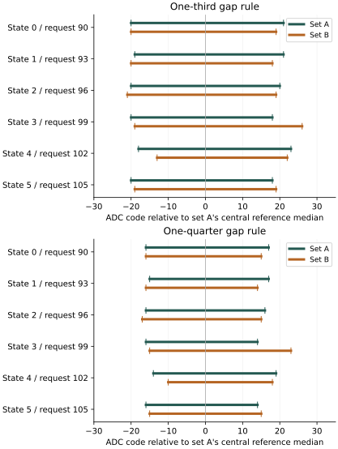
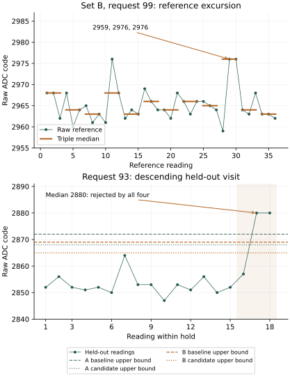

Return: reference transfer passes; nominal recognition remains incomplete
Return 20261001-142524 contains all 1,296 acquisitions and 10,549 native journal records, with successful restoration and a complete terminal report. Both reference sets recognized all 72 medians from the other set under each rule. Nevertheless, all four calibrations rejected the same held-out median at request 93. Each recognized 107 of 108 nominal medians, with one unresolved decision and no wrong-state or unavailable median decisions. The recording and mutual-reference criteria passed; complete nominal recognition did not.
| Calibration | Other set's reference medians correct | Nominal medians correct / unresolved | Intermediate medians assigned / unresolved |
|---|---|---|---|
| A baseline | 72 / 72 | 107 / 1 | 136 / 44 |
| A candidate | 72 / 72 | 107 / 1 | 24 / 156 |
| B baseline | 72 / 72 | 107 / 1 | 108 / 72 |
| B candidate | 72 / 72 | 107 / 1 | 27 / 153 |
During the descending visit at request 93, the last three readings were 2857, 2880, 2880. Their median, 2880, exceeded the state-1 upper bounds by 8, 12, 11 and 15 ADC codes respectively. These are four assessments of one observed triple. All other nominal requests yielded 18 correct medians each; request 93 yielded 17 of 18. Among correct medians, the smallest remaining margin was 14 codes under each baseline and 10 under each candidate.
Raw observations retain information suppressed by medians
Five isolated readings of 2944 at request 96 fell exactly on the A baseline's state-3 lower bound and were therefore assigned to the wrong state. The other three calibrations rejected them. Each containing triple still had a correct state-2 median. Across the 324 nominal raw readings, A baseline produced 317 correct, five wrong-state and two unresolved decisions. Each other calibration produced 314 correct, no wrong-state and ten unresolved decisions.
Three readings of 2816 at request 90 account for the additional lost correct raw decisions: A baseline accepted them at its upper bound, while the other calibrations rejected them. The two request-93 readings of 2880 were rejected by all four. Thus the narrower A rule prevented five raw wrong-state assignments while rejecting three previously correct raw readings. It did not improve the declared median-recognition result.
First and repeated ADC result octets agree for every acquisition, including both excursions. Control readbacks match their requests; all sample and operating-guard statuses report success. The request-93 doublet occurred near counter times 34.491 and 34.526 seconds. These digital observations preserve the anomaly but do not establish its analog cause or prove that each conversion was fresh.
How reference variation changes acceptance
At request 99, set B recorded 2959, 2976, 2976 in readings 28–30. Their median of 2976 became the reference maximum; the other eleven medians reached at most 2968. The declared single-triple influence calculation therefore reports an eight-code decrease in that maximum when this triple alone is omitted. All twelve triples remain in both fitted B calibrations.
| State / request | A reference medians | B reference medians | A baseline bounds | B baseline bounds | A candidate bounds | B candidate bounds |
|---|---|---|---|---|---|---|
| 0 / 90 | 2791–2800 | 2793–2796 | 2775–2816 | 2775–2814 | 2779–2812 | 2779–2810 |
| 1 / 93 | 2848–2856 | 2849–2852 | 2832–2872 | 2831–2869 | 2836–2868 | 2835–2865 |
| 2 / 96 | 2903–2910 | 2903–2908 | 2887–2927 | 2886–2926 | 2891–2923 | 2890–2922 |
| 3 / 99 | 2961–2965 | 2963–2976 | 2944–2982 | 2945–2990 | 2948–2978 | 2949–2987 |
| 4 / 102 | 3017–3024 | 3019–3022 | 3000–3041 | 3005–3040 | 3004–3037 | 3008–3036 |
| 5 / 105 | 3075–3079 | 3077–3079 | 3058–3096 | 3059–3097 | 3062–3092 | 3063–3093 |
Values are raw ADC codes in decimal notation. Relative to A, B raises the state-3 upper bound by eight codes under the baseline and nine under the candidate. The adjacent state-4 lower bound rises by five and four codes respectively. Mutual reference coverage still passes; it does not imply that the intervals are unchanged.

On identical held-out observations, A and B differ on 70 of 180 intermediate median decisions under the baseline and 39 of 180 under the candidate. Every difference is acceptance versus rejection; there is no change between two assigned states. Baseline differences comprise 49 A-assigned/B-rejected and 21 A-rejected/B-assigned outcomes; candidate differences comprise 18 and 21 respectively. All 108 nominal decisions agree between sets, including the shared rejection.
Intermediate requests have no declared correct state. These changes quantify coverage sensitivity, not improved accuracy. For example, all 18 request-100 medians are assigned by the B candidate, compared with none by the A candidate. A calibration can therefore pass the mutual-reference criterion while making substantially different decisions near its boundaries.

Recording and evidence
Two read-only captures of the 96 MiB experiment region matched. The decoder frozen with the preparation reproduces the stored analysis. Independent return checks reconstruct all four interval rules, cross-reference coverage and nominal triple decisions, retain both reference and test excursions, separate raw from median outcomes, and reject qualification when a reference footer or the terminal record is removed. All eight checks passed.
Acquisition occupied 45.503 seconds. The terminal counter reached 461.108 seconds, approximately 7 minutes 41 seconds, after the four journal readbacks and before its own write/readback. These intervals use the configured 54 MHz architectural counter. They do not independently measure total powered duration. The prescribed allowance was ten minutes; no workflow deviation was reported.
The observed CPU-frequency range was 1,499,971,895–1,500,028,881 Hz and the raw thermal range was 67315–67331. Boot files and the preceding journal are unchanged; partition geometry and the MBR are unchanged, and the two FAT copies agree. Seven boot-volume metadata sectors changed. Their writer and time are unestablished.
Capture SHA-256: 0305f2c0e8280742147777467b366ef2394538880ba9412020d6b6d4612f4070.
Decoded journals · Reference comparisons and observations · Provenance · Evidence index · Boot-volume comparison
Question and rationale
How reproducible are the reference-derived recognition intervals, and how strongly can consecutive reference excursions alter later acceptance? The preceding request-coverage return recognized all 108 nominal test medians under both interval rules. However, request 93 produced the reference triple 2851, 2880, 2880. Its median of 2880 widened the state-1 interval; the other eleven reference medians ranged from 2850 to 2852. A later isolated 2880 observation remained inside both widened intervals. Complete test recognition therefore did not establish reference stability.
This investigation acquires two separate reference sets before the held-out sequence. Both use the same nominal requests, sampling procedure and number of observations. Each produces its own calibration; neither is selected as the preferred set or combined with the other. Comparing their bounds, mutual coverage and decisions on identical held-out data isolates the consequences of reference variation without fitting the test observations.
Acquisition sequence
Numerical settings and counts below use decimal notation. Set A acquires 36 consecutive readings at each request 90, 93, 96, 99, 102 and 105, in that order. Set B repeats the same sequence with 36 new readings per request. Each set contains 216 readings and supplies twelve disjoint triple medians per nominal state. All raw readings and every median are retained, including those at transitions.
The held-out sequence retains the preceding investigation's three orders, with 18 consecutive readings at each request:
| Order | Requests | Readings |
|---|---|---|
| Ascending | 90 through 105 | 288 |
| Descending | 105 through 90 | 288 |
| Mixed | 98, 90, 103, 95, 100, 92, 105, 97, 94, 102, 91, 99, 96, 104, 93, 101 | 288 |
The total is 1,296 acquisitions: 432 references and 864 held-out readings. Each request receives 54 held-out readings and 18 medians. The six nominal requests contribute 108 medians with expected states 0 through 5. The ten intermediate requests contribute 180 medians with no expected state. Descriptor marker 6 denotes that absence, not another electrical state.
The existing four native acquisition buffers contain 216, 216, 432 and 432 rows. The first two contain A and B; the last two contain the continuous held-out schedule, divided after its first 24 holds. That division falls between requests 98 and 97 in the descending order and introduces no extra hold or delay. All acquisition precedes journal persistence. The four journals and primary report contain 10,549 records when complete.
Zero added wait and operation profile 0 are retained throughout. Mandatory settling, operating guards, ADC trigger/status/result handling, repeated result-octet reads and restoration are unchanged. Set B's elapsed time and entry history differ from A's; disjoint samples from one boot are not independent apparatus replications. The second reference pass also changes the history preceding the test sequence relative to the earlier experiment.
Declared assessment
For each set separately, form twelve disjoint triple medians per nominal state. Extend their minimum and maximum by two ADC codes. A guarded bound outside the ADC domain, or adjacent guarded intervals with no unassigned integer, invalidates that calibration. An invalid set yields unavailable decisions; it cannot borrow the other set's bounds.
Retain the two rules from the preceding investigation. The baseline extends each neighbouring edge by floor(g / 3), where g is the guarded gap's number of unassigned integer codes. The candidate uses floor(g / 4). Outer edges use the nearest gap and are clipped to the ADC domain. This produces four calibrations: A baseline, A candidate, B baseline and B candidate. These are PC reconstructions from native pre-test references; none governs the target acquisition loop.
| Question | Assessment fixed before execution |
|---|---|
| Was the recording complete? | 1,296 successful observations and operation records, successful restoration, four complete journals and the terminal report. |
| Do references transfer between sets? | For each rule separately, both calibrations must be valid and all 72 medians from B must be correctly recognized by A, and all 72 from A by B. Report each direction separately. |
| Does nominal test recognition succeed? | For each of the four calibrations separately, all 108 nominal held-out medians must be correct. Keep wrong-state, unresolved and unavailable outcomes distinct. |
| How much do the intervals change? | Report signed lower-bound, upper-bound and width changes from A to B for every state, plus integer intersection and union sizes. No post-run tolerance is introduced. |
| Do the calibrations make different decisions? | Pair A and B outcomes on each identical held-out median, separately for each rule and for nominal versus intermediate requests. Record assigned states as well as outcome categories. |
| Can one reference triple dominate an extremum? | For each of the twelve triples in turn, report the change in reference minimum and maximum when that triple alone is omitted from this diagnostic calculation. The full twelve-triple set still defines every recognition interval. |
Preserve per-request and per-order raw and median distributions, consecutive nominal raw excursions, margins, control readbacks, ADC octets, operating statuses and counters. Intermediate assignments have no truth label. An increased rejection count at those requests is a change in coverage, not an accuracy gain.
Mutual reference coverage can pass when both intervals are broad. Read that criterion alongside endpoint changes, reference spans, single-triple influence and held-out decisions. It does not prove stationary noise, independent conversion freshness or general reliability. Missing or invalid evidence remains explicit; no replacements, pooled references, clipping of raw observations or success-seeking retries are permitted.
Interpretation and implementation boundary
This return demonstrates two distinct effects: a reference doublet changes the fitted intervals and their intermediate coverage, while a separate held-out doublet remains unresolved under every calibration. The earlier request-93 value of 2880 has now appeared in references and in held-out observations across runs. Reference transfer alone is consequently insufficient to qualify the acquisition path. Widening a band could accept the value without identifying its cause.
The next proposed investigation isolates conversion sequencing at requests 93 and 96. One candidate comparison is ADC reset before every conversion versus reset once per hold, retaining selector, trigger, result ordering, cleanup, guard checks and the same elapsed reset-delay allowance. Separate reference and test intervals must remain fixed before that comparison. The conversion-control investigation implements this comparison with native idle-pin and register diagnostics. The present return does not establish that reset frequency causes the excursions.
The repeated-result investigation already found exceptional values persisting through extra reads before a later triggered acquisition returned inside its interval. Reset, cleanup, control checks and settling also intervened, so that result did not isolate which operation mattered. The within-bit comparison found agreement at both observed instants, including exceptional readings. The proposed conversion-sequence comparison addresses a different variable; it must preserve those limits rather than treat read agreement as proof of freshness.
The executable path remains the existing loader and entry/timebase binding, followed by literal SEIGRASM operating supervision, electrical acquisition, control restoration, pin release and native senary SD journaling. This preparation changes schedule and recording data only; all target instruction regions remain byte-identical to the preceding experiment. PC code packages those literals and later decodes the returned records. No foreign target language or compiler produces this path.
The existing EEPROM loader, configured entry state and supplied component bindings remain apparatus dependencies. This experiment does not invoke Hyphos creation or prove firmware exclusion, independent conversion freshness, calibrated absolute voltage or cross-cluster equivalence. Its reusable contribution is a test of how available silicon's observed reference behaviour affects qualification; these particular bounds cannot be assumed on another cluster.
Preparation and run interval
The powered allowance is 10 minutes. The preceding 8,798-record return reached its terminal counter near 385 seconds. Scaling to this run's 10,549 records estimates approximately 462 seconds. This estimate supports the allowance; only the returned terminal report establishes completion. Its timestamp follows four journal readbacks and precedes the terminal report's own write/readback.
Preparation 52A2D68F1212 passed all 17 supplied-device and evidence checks. Installation completed with 6144 verified transfers, two matching full readbacks while the volume remained locked, and successful ejection. The complete pre-write backup matches the preserved preceding return. Its physical return is recorded above. The successor preparation is recorded separately.
Image SHA-256: d9725d8b6138082eab5d9446049670ec6a22f7bc133417ff73a00a57256ae55a.
Frozen protocol · Manifest · Validation · SD verification · Evidence index